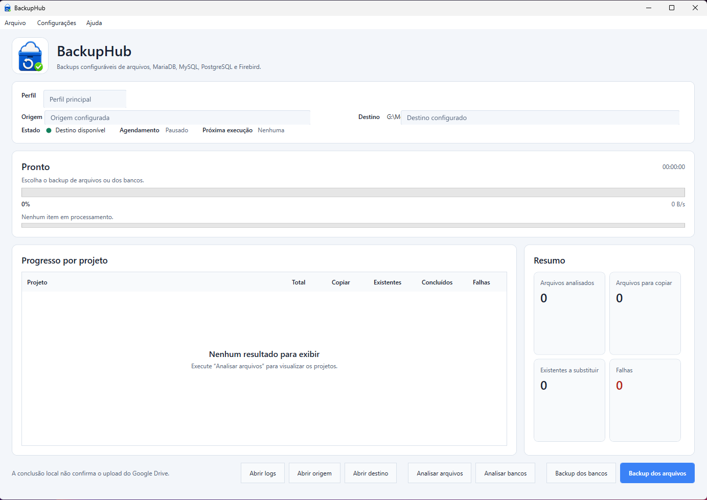

Backup de arquivos
Trabalhe com múltiplas origens, exclusões configuráveis e validação antes de iniciar a cópia.
Não destrutivoBackup portátil para Windows
Centralize a análise, o agendamento e a execução de backups de arquivos e bancos de dados em uma interface clara, com validação SHA-256 e histórico de cada execução.
Pacote portátil e self-contained. Tamanho, SHA-256, instruções e limitações são publicados na release oficial.

Arquivos e bancos de dados em um fluxo centralizado
Controle sem complexidade
Configure perfis, analise o que será copiado e acompanhe cada etapa sem depender de scripts durante a operação.
Trabalhe com múltiplas origens, exclusões configuráveis e validação antes de iniciar a cópia.
Não destrutivoAnalise e gere backups de MariaDB, MySQL, PostgreSQL e Firebird usando as ferramentas oficiais de cada provedor.
Quatro provedoresSepare origens, destinos, conexões e regras em perfis reutilizáveis para diferentes rotinas.
OrganizaçãoPrograme dias, horários, tolerância e novas tentativas sem permitir operações incompatíveis sobrepostas.
Controle de concorrênciaUse staging, tamanho e SHA-256 para publicar somente conjuntos concluídos e tornar alterações detectáveis.
Verificação SHA-256Consulte resultados, falhas, logs e manifestos, com retenção aplicada apenas sobre conjuntos reconhecidos.
RastreabilidadeFluxo previsível
O BackupHub deixa claro o que será executado e registra falhas parciais sem apresentá-las como sucesso total.
Defina origens, destino, exclusões, bancos e retenção.
Valide o plano e visualize o volume antes de copiar.
Processe arquivos, bancos ou ambos com progresso visível.
Publique o conjunto íntegro e registre o resultado.
Interface objetiva
Perfis, conexões e agendamentos ficam separados por contexto, com estados e ações visíveis em cada etapa.
Segurança com transparência
O BackupHub combina verificação, publicação controlada e rastreabilidade para tornar cada execução mais previsível e auditável.
Staging, tamanho, SHA-256, presença dos artefatos esperados e manifesto antes da publicação final.
Somente conjuntos verificados chegam ao destino final, mantendo cada publicação organizada, consistente e pronta para conferência.
Logs, manifestos e histórico preservam resultados, horários e ocorrências para facilitar conferência e diagnóstico.